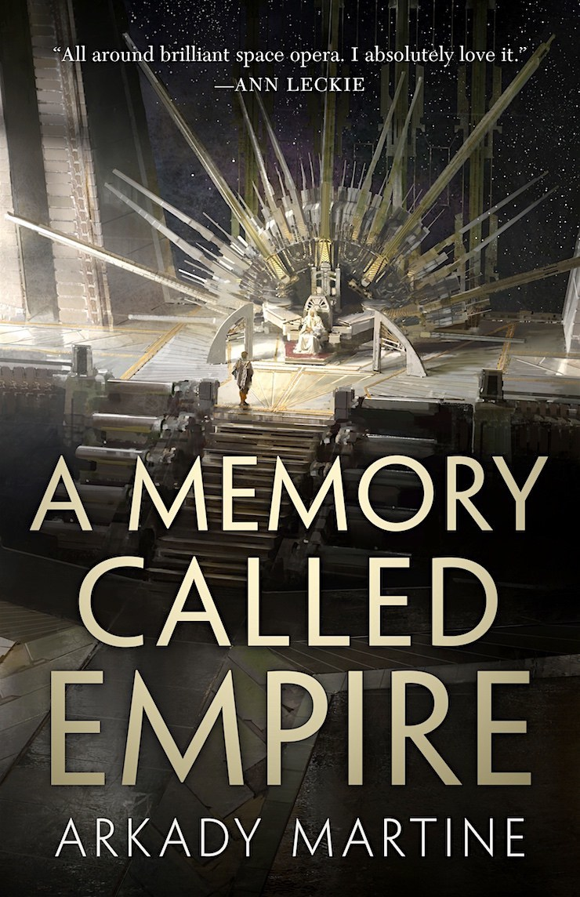
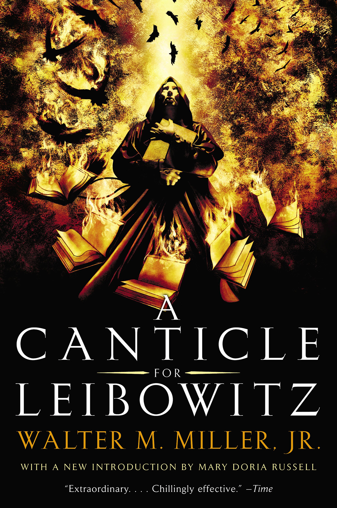

Ryan Polhemus
I'm taking this class to further expose myself to web programming, as it is not something that I have done a lot of in the past. I initially took COMP20 in freshman year (four years ago, yikes), and that's more or less the extent of my web programming
knowledge, with some small tricks picked up from network security, databases, or big data. For general software development I'm far more comfortable - I graduated from Tufts with my BS last year, and this is the last course for my MS, both in computer science.
My most comfortable languages are Python and C, but I've also used Java and C++ in the past.
Favorite foods:
- Ribs
- Bacon-wrapped scallops
- Maine blueberry pie
Picante
Honestly, I'm not a huge restaurant person (possibly being a grad student has something to do with that), so this isn't really that high of a bar, but I quite like Picante, right off campus. It's a very short walk, so convenient access from campus; the wait time is short; and the prices are relatively low, the holy trinity for college students.
 (Image taken from https://cafedelites.com/oven-barbecue-ribs/)
(Image taken from https://cafedelites.com/oven-barbecue-ribs/)
In my opinion, ribs are best either with a beer while watching football,
or on the back deck during the summer. Home-made are the best, and they definitely require barbecue sauce.
| Title |
Cover |
Author |
Summary |
| The Blade Itself |
 |
Joe Abercrombie |
A grimdark fantasy novel driven by fantastic characters. |
| Guards! Guards! |
 |
Terry Pratchett |
The first book in Pratchett's City Watch series, and one of the Discworld books. A dragon gets loose; the night watch (attempts) to stop it. |
| A Memory Called Empire |
 |
Arkady Martine |
Scifi; an ambassador for a small space station is sent to her new posting, only to find her predecessor very dead and things falling apart. |
| A Canticle for Leibowitz |
 |
Walter Miller Jr. |
A monastery attempts to preserve the science of the old world after an apocalypse, even as the world follows the same paths that led to ruin. |